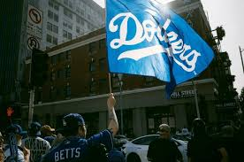

Move to Los Angeles
Transition 1957–1958
Rising stadium issues in Brooklyn, economic opportunities, and the growth of the West Coast led ownership to move the team to Los Angeles. The move dramatically shifted MLB's geographic balance and fan base.
First Seasons in Los Angeles
The Dodgers initially played at the Los Angeles Memorial Coliseum before their permanent home was constructed. Despite the change in venue, fan enthusiasm was strong and attendance climbed.
Dodger Stadium Development
Dodger Stadium opened in 1962 and quickly became an iconic ballpark with its unique terraces and views. It remains one of the oldest active MLB stadiums and a symbol of the franchise.